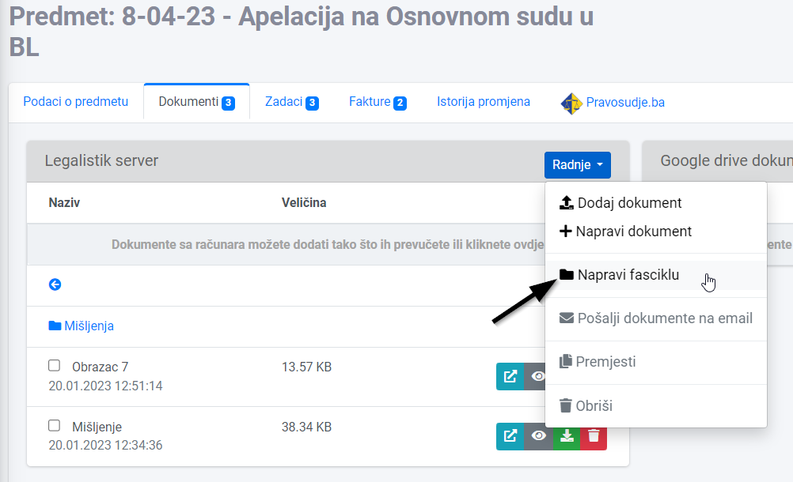
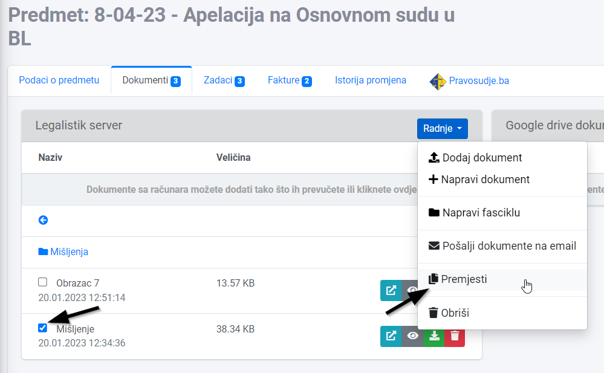
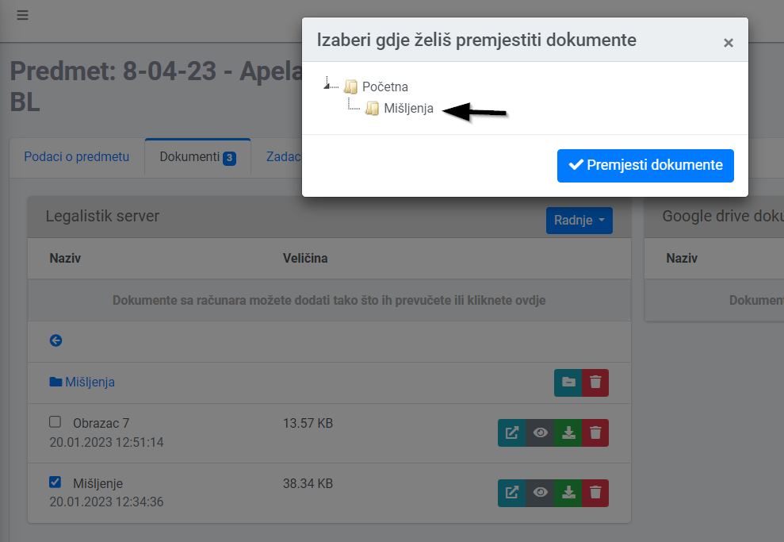

Unutar modula Dokumenti, ali i unutar pojedinačnog predmeta, prilikom dodavanja dokumenata na Legalistik, možete ih grupisati po fasciklama, kako vam najviše odgovara. Recimo, sva mišljenja unutar fascikle Mišljenja i sl.
Da bi napravili novu fasciklu, otvorite željeni predmet, padajući izbor Radnje i kliknite na Napravi fasciklu:

Unesite naziv fascikle i snimite. Ta fascikla vam je sad na raspolaganju i ulaskom u nju možete dodavati željene dokumente tog tipa.
Ako želite premještati dokumente između fascikli, označite te dokumente na zakačku pored naziva predmeta, kliknite na Radnje i odaberite Premjesti opciju:

Pojaviće vam se prozor sa izlistanim prethodno napravljenim fasciklama. Odaberite željenu i kliknite na Premjesti:

Fasciklama možete mijenjati ime ili ih obrisati na ikonice desno od naziva fascikle, ali vodite računa da brisanjem fascikle, brišete i sve dokumente unutar iste!